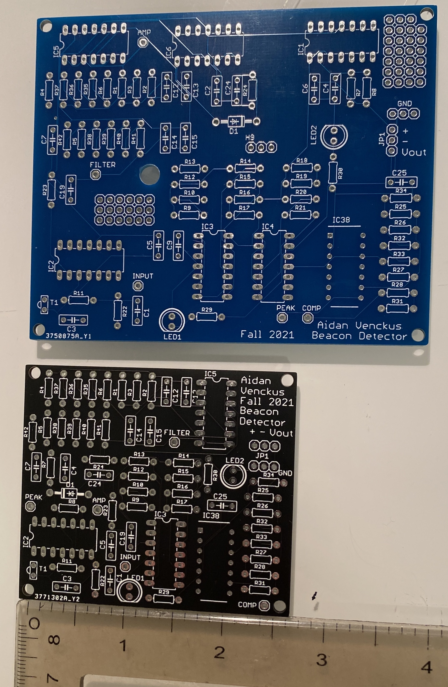

Beacon Detector v2 PCB:
Beacon Detector v1 vs v2 PCB:


I needed to revise my previous Beacon Detector because I had made a few mistakes that were worth designing a new PCB for. I had made my traces too small which led to some of the ones that I used to have traces scratched which acts like a cut wire (I changed this after ordering). In addition my previous design had a couple op amps in positive feeback accidently in addition to having additional unnessesary gain stages (from 6 to 4). Lastly I did a complete size reduction and compacted all the components by moving them and utilizing all the op amp ports.